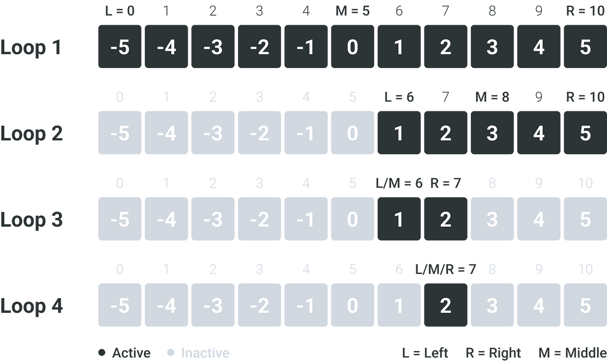
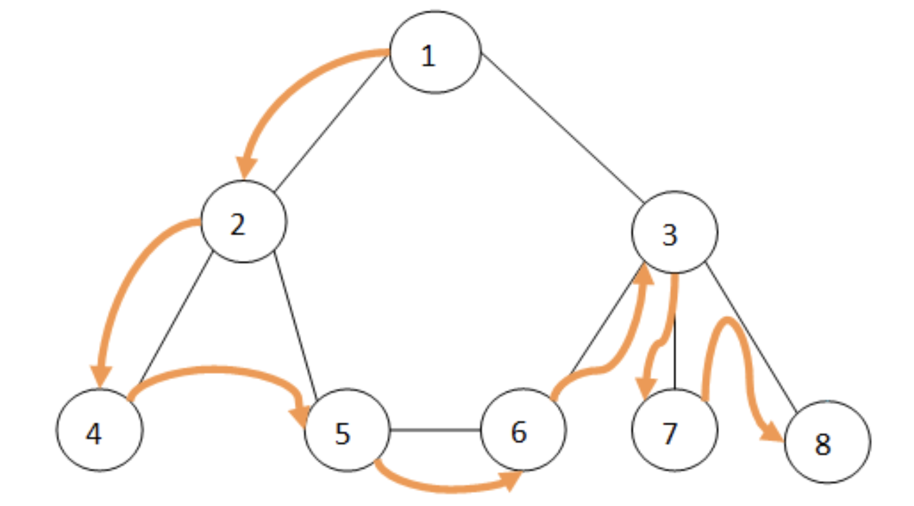
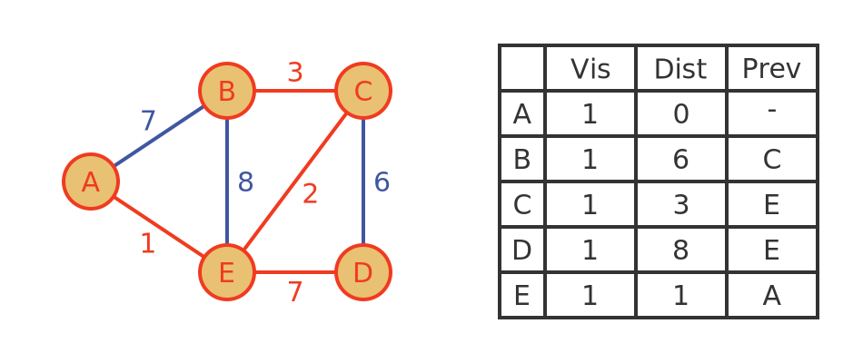
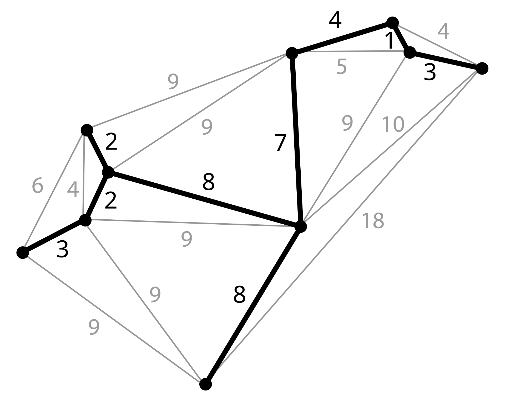
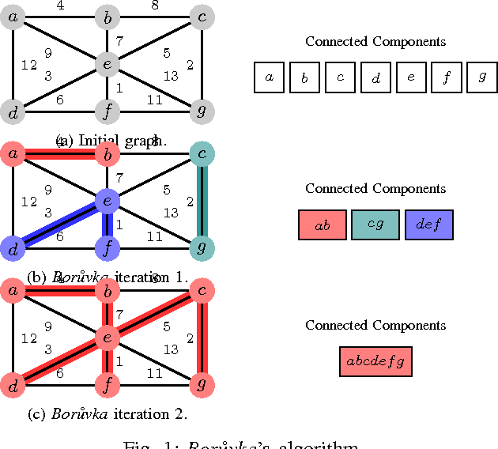
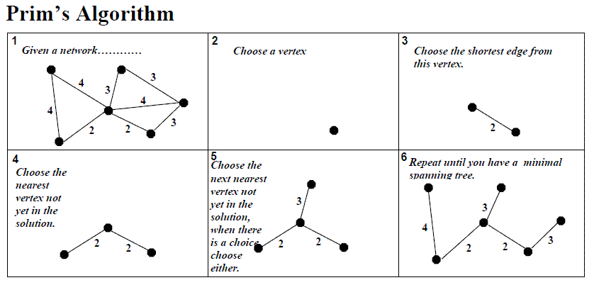
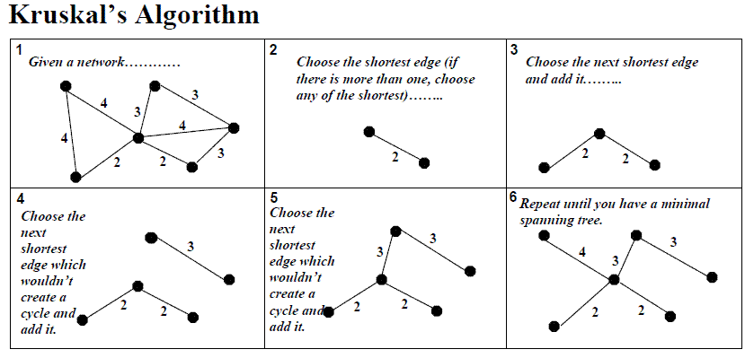
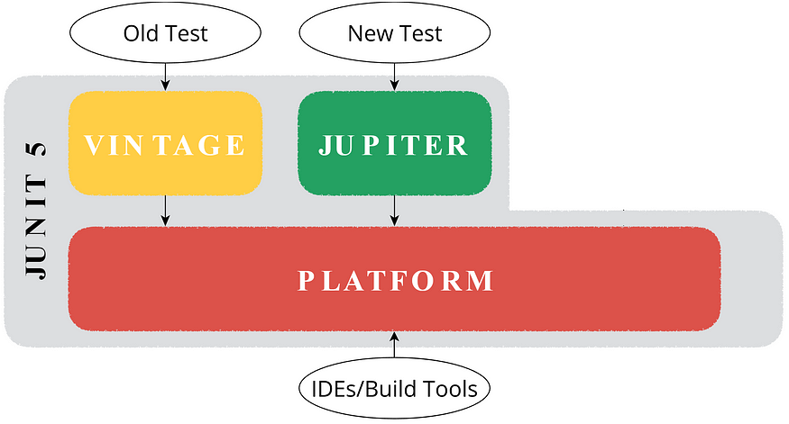

Class Overview
Review: Fundamentals of Computer Science 1: Class Website
Class-based Program Design
Read lecture notes before coming to class!
Class Major Themes
- Respresenting Data Structures
- Union Data (Interface)
- Compound Data (Classes)
- Lists
- Trees
- Graphs
- Maps
- Dynamics Dispatch
- MtLoX vs ConsLoX (w/ common interface ILoX)
- Double Dispatch (e.g. use in Abstraction)
- Visitors! (where the fun starts)
- Mutation
- Aliasing
- Extensional Equality vs Intensional Equality (see more in testing)
- Mutable Data Structures
- ArrayLists
- Loops (forEach, counted for, while)
- Sorting (Selection, Insertion, Quicksort, Mergesort, Priority Queues, Heapsort)
- Deque
- Iterators
- Higher-order Iterators
- Algorithms
- Big-O Analysis
- Sorting (Selection, Insertion, Quicksort Mergesort, Priority Queues, Heapsort)
- Searching (Binary, Breadth-first Search (BFS), Depth-first Search (DFS))
- Dijkstra’s Algorithm
- Minimum Spanning Trees
Introduction to Java
Java is a versatile and widely-used programming language known for its strong typing and object-oriented features. In this introduction, we'll explore the basics of Java, including atomic data types, compound data, and some essential programming concepts.
Atomic Data in Java
Java supports various primitive data types, which represent simple atomic data. Here are some examples:
// Primitive Types
int distance = 10; // An integer representing distance
double coffeePrice = 4.25; // A double representing the price of a coffee
String greeting = "hello"; // A string representing a greeting
char initial = 'A'; // A character representing an initial
boolean isRaining = true; // A boolean representing a weather conditionIn Java, it's important to note the type of each variable. Unlike some dynamically-typed languages, Java checks data types at compile time, reducing the risk of type errors during runtime.
Compound Data in Java
Compound data types are structures that can hold multiple values. In Java, we often use classes to define such
structures. Let's explore an example involving a Book and its Author.
class Author {
String name;
int birthYear;
Author(String name, int birthYear) {
this.name = name;
this.birthYear = birthYear;
}
}
class Book {
String title;
Author author;
double price;
Book(String title, Author author, double price) {
this.title = title;
this.author = author;
this.price = price;
}
}
class ExamplesBook {
Author jkRowling = new Author("J.K. Rowling", 1965);
Book harryPotter = new Book("Harry Potter and the Philosopher's Stone", jkRowling, 19.99);
ExamplesBook() {}
}In this example, Author is a class representing an author's name and birth year, while
Book is a class representing a book's title, its author, and its price. Instances of these classes
(jkRowling and harryPotter) are created using constructors, which initialize the
objects' attributes.
Java's Strong Typing
Java is a strongly-typed language, meaning that the type of a variable is checked at compile time. This ensures that type mismatches are caught early in the development process. For instance, you cannot add a string to a number directly:
int num = 5;
String text = " apples";
String result = num + text; // This will compile and concatenate the number and string.However, adding a number to a string results in string concatenation rather than arithmetic addition.
Java's Infix Notation
Java uses infix notation for operations, which means operators are placed between the operands. For example:
int sum = 3 + 4; // Addition
int product = 5 * 6; // Multiplication
boolean isEqual = (7 == 7); // Equality check Working with Java Classes
Java classes are the blueprint for creating objects. They encapsulate data (attributes) and behavior (methods).
Here’s an example with a Person class:
class Person {
String name;
int age;
// Constructor
Person(String name, int age) {
this.name = name;
this.age = age;
}
// Method to display person's info
void displayInfo() {
System.out.println("Name: " + name + ", Age: " + age);
}
}
class ExamplesPerson {
Person alice = new Person("Alice", 30);
Person bob = new Person("Bob", 25);
ExamplesPerson() {
alice.displayInfo();
bob.displayInfo();
}
} In this example, the Person class has attributes for a person's name and age, a constructor to
initialize these attributes, and a method to display the person's information. Instances of the
Person class (alice and bob) are created and their information is
displayed.
Conclusion
Java is a powerful language with a strong typing system that helps catch errors at compile time. Its object-oriented nature allows for the creation of complex data structures through classes and objects. By understanding the basics of atomic and compound data, infix notation, and class structures, you can start building robust Java applications XDD
Union Data (Interface) -- Respresenting Data Structures
In programming, unions allow for a variable to be one of several types. In Racket, union data types are defined in comments, but in Java, we use interfaces to represent unions. Here are some examples to illustrate this concept.
Example - Spaceships and Invaders
Racket:
(define-struct invader (loc color bullets size))
;; An Invader is a (make-invader Posn String PosInt PosInt)
(define invader1 (make-invader (make-posn 60 120) "green" 30 3))
#;(define (invader-temp1 inv)
(posn-temp1 (invader-loc inv))
(invader-color inv)
(invader-bullets inv)
(invader-size inv))
(define-struct ship (loc color speed))
;; A Spaceship is a (make-ship Posn String PosInt)
;; interp.: loc is a position on the Cartesian plane
;; speed is measured in miles/hour
;; A GamePiece is one of:
;; - Spaceship
;; - Invader
;; NOTE: The Union data type is only in comments in DrRacket. In Java, however, this is not in comments.Java:
interface IGamePiece {}
// Represents an Invader in the game
class Spaceship implements IGamePiece {
Location loc;
String color;
int speed;
Spaceship(Location loc, String color, int speed){
this.loc = loc;
this.color = color;
this.speed = speed;
}
}
// Represents an Invader in the game
class Invader implements IGamePiece {
Location loc;
String color;
int bullets;
int size;
Invader(Location loc, String color, int bullets, int size){
this.loc = loc;
this.color = color;
this.bullets = bullets;
this.size = size;
}
}
// A class to represent a location on the Cartesian plane
class Location {
int x;
int y;
Location(int x, int y){
this.x = x;
this.y = y;
}
}
class Examples {
// You can't do the line below because it doesn't know what loc1 is yet
// Spaceship ship = new Spaceship(this.loc1, "blue", 55);
Location loc1 = new Location(30, 40);
Location loc2 = new Location(60, 80);
// Represents two IGamePieces: Spaceships and Invaders
IGamePiece ship = new Spaceship(this.loc1, "blue", 55);
IGamePiece invader1 = new Invader(this.loc2, "pink", 30, 3);
// You can still do this, but it's bad practice
// Spaceship ship = new Spaceship(new Location(30, 40), "blue", 55);
}>IGamePiece is the type at compile time, while Spaceship and Invader are
the types at runtime. Use the this keyword to remove ambiguity. In Java, unions are represented by
interfaces, which allows for more general operations.
Example - Ancestor Tree
Racket:
;; A Person is a (make-person String Person Person)
(define-struct person (name mom dad))
(define alice (make-person "Alice"
(make-person "Sally"
(make-person "Abby"
...))))
; this issue with this definition is that you cannot stop--you need a base case
; for referential data
;; An;; An AT is one of:
;; - #false
;; - (make-person String AT AT)Java:
interface IAT{}
// Class to represent an unknown in an ancestor tree
class Unknown implements IAT {
Unknown() {}
}
// Class to represent a person in an ancestor tree
class Person implements IAT {
String name;
int yob;
IAT mom;
IAT dad;
Person(String name, int yob, IAT mom, IAT dad) {
this.name = name;
this.yob = yob;
this.mom = mom;
this.dad = dad;
}
}In this example, IAT is an interface representing a node in an ancestor tree. The
Unknown class represents an unknown person, while the Person class represents a person
with a name, year of birth (yob), and references to their mother (mom) and father
(dad), both of which are also of type IAT.
Conclusion
Understanding unions in Java involves using interfaces to allow a variable to represent one of several types. This concept is powerful for creating flexible and extensible data structures, such as game pieces in a video game or nodes in an ancestor tree. By using interfaces, Java allows for the implementation of union types that can lead to more generalized and maintainable code.
Compound Data (Classes) -- Respresenting Data Structures
In Java, compound data types are used to represent more complex structures that can contain multiple pieces of data. These are typically implemented using classes. Classes can be either concrete or abstract. Let's explore these concepts in detail.
Concrete Classes
A concrete class is a class that can be instantiated, meaning you can create objects from it. Concrete classes define attributes and methods that represent the state and behavior of the objects.
Here is an example representing Books
import tester.*;
class Book {
String name;
String author;
double price;
int year;
Book(String name, String author, double price, int year) {
this.name = name;
this.author = author;
this.price = price;
this.year = year;
}
double getPrice() {
return this.price;
}
// to return the discounted price of this book given the discount rate
double discount(double rate) {
return this.price - (rate * this.price);
}
// to return a new book with the same author and name as this book,
// but with price discounted at the given rate
Book discountedBook(double rate) {
return new Book(this.name, this.author, this.discount(rate), this.year);
}
}
/*
* Represent a bunch of books, and computing
* - their total price
* - how many books we have
* - all the books published before the given year
* - a sorted list of books
*/
/*
* A list of books is one of
* empty
* (cons book list-of-books)
*/
// DYNAMIC DISPATCH: deciding which method definition to invoke (in which class)
// based on the information available at runtime of the object that's invoking
// the method
interface ILoBook {
// to compute the total price of all books in this list of books
double totalPrice();
// to count how many books are in this list of books
int count();
// to return a list of all the books in this list of books
// published before the given year
ILoBook allBooksBefore(int year);
// to construct a list of books that contains the same books as
// this list of books, but sorted increasing by price
ILoBook sortByPrice();
ILoBook insert(Book b);
}
class MtLoBook implements ILoBook {
MtLoBook() {
// nothing to do!
}
public double totalPrice() {
return 0;
}
public int count() {
return 0;
}
public ILoBook allBooksBefore(int year) {
return this;
// return new MtLoBook();
}
public ILoBook sortByPrice() {
return this;
// return new MtLoBook();
}
public ILoBook insert(Book b) {
return new ConsLoBook(b, this);
}
}
class ConsLoBook implements ILoBook {
Book first;
ILoBook rest;
ConsLoBook(Book first, ILoBook rest) {
this.first = first;
this.rest = rest;
}
public double totalPrice() {
/* Template:
* FIELDS:
* this.first -- Book
* this.rest -- ILoBook
* METHODS:
* this.totalPrice() -- double
* this.count() -- int
* this.allBooksBefore(int) -- ILoBook
* this.sortByPrice() -- ILoBook
* METHODS OF FIELDS:
* this.first.getPrice() -- double ****
* this.first.discount(double) -- double
* this.first.discountedBook(double) -- Book
* this.rest.totalPrice() -- double *****
* this.rest.count() -- int
* this.rest.allBooksBefore(int) -- ILoBook
* this.rest.sortByPrice() -- ILoBook
*/
return this.first.getPrice() + this.rest.totalPrice();
}
public int count() {
return 1 + this.rest.count();
}
public ILoBook allBooksBefore(int year) {
if (this.first.year < year) {
return new ConsLoBook(
this.first,
this.rest.allBooksBefore(year));
} else {
return this.rest.allBooksBefore(year);
}
}
public ILoBook sortByPrice() {
/*
* Assuming we have:
* ILoBook insert(Book) -- on cons? on ilobook?
* boolean isCheaper(Book) -- on Book
*/
return this.rest.sortByPrice().insert(this.first);
}
// to insert the given book into this sorted list of books
public ILoBook insert(Book b) {
if (b.getPrice() < this.first.getPrice()) {
return new ConsLoBook(b, this);
} else {
return new ConsLoBook(this.first, this.rest.insert(b));
}
}
}
class ExamplesBooks {
Book htdp = new Book("HtDP", "MF", 0.0, 2014);
Book hp = new Book("HP & the search for more money", "JKR", 9000.00, 2015);
Book gatsby = new Book("The Great Gatsby", "FSF", 15.99, 1930);
ILoBook mtList = new MtLoBook();
ILoBook twoBooks = new ConsLoBook(this.htdp,
new ConsLoBook(this.hp,
this.mtList));
ILoBook threeBooks = new ConsLoBook(this.gatsby, this.twoBooks);
}Abstract Classes
An abstract class is a class that cannot be instantiated on its own and is meant to be subclassed. Abstract classes can contain abstract methods, which are methods without a body that must be implemented by subclasses. Abstract classes provide a template for other classes to extend.
Here is a great example of complex data struture in java - with a combinations of interfaces, abstract classes, inheritance, etc.
Example - Shape
/*
+-----------------------------------------+
| +------------------------------------+ |
| | | |
v v | |
+----------------------------+ | |
| IShape | | |
+----------------------------+ | |
| double area() | | |
| boolean distTo0() | | |
| IShape grow(int) | | |
| boolean biggerThan(IShape) | | |
| boolean contains(CartPt) | | |
+----------------------------+ | |
| | |
/ \ | |
--- | |
| | |
--------------------------------------------- | |
| | | |
+-----------------------------------+ +----------------------------+ | |
| abstract AShape | | Combo | | |
+-----------------------------------+ +----------------------------+ | |
+--| CartPt loc | | IShape top |-+ |
| | String color | | IShape bot |---+
| +-----------------------------------+ +----------------------------+
| | abstract double area() | | double area() |
| | boolean distTo0() | | boolean distTo0() |
| | abstract IShape grow(int) | | IShape grow(int) |
| | boolean biggerThan(IShape) | | boolean biggerThan(IShape) |
| | abstract boolean contains(CartPt) | | boolean contains(CartPt) |
| +-----------------------------------+ +----------------------------+
| |
| / \
| ---
| |
| --------------------------------
| | |
| +--------------------------+ +--------------------------+
| | Circle | | Rect |
| +--------------------------+ +--------------------------+
| | int radius | | int width |
| +--------------------------+ | int height |
| | double area() | +--------------------------+
| | boolean distTo0() | | double area() |
| | IShape grow(int) | | IShape grow(int) |
| | boolean contains(CartPt) | | boolean contains(CartPt) |
| +--------------------------+ +--------------------------+
| / \
| ---
| |
| +-----------------------------+
| | Square |
| +-----------------------------+
| +-----------------------------+
| | IShape grow(int) |
| +-----------------------------+
|
+-------+
|
v
+-----------------------+
| CartPt |
+-----------------------+
| int x |
| int y |
+-----------------------+
| double distTo0() |
| double distTo(CartPt) |
+-----------------------+
*/
interface IShape {
// to compute the area of this shape
public double area();
// to compute the distance form this shape to the origin
public double distTo0();
// to increase the size of this shape by the given increment
public IShape grow(int inc);
// is the area of this shape is bigger than the area of the given shape?
public boolean biggerThan(IShape that);
// does this shape (including the boundary) contain the given point?
public boolean contains(CartPt pt);
}
// to represent a geometric shape
abstract class AShape implements IShape {
CartPt loc;
String color;
AShape(CartPt loc, String color) {
this.loc = loc;
this.color = color;
}
// to compute the area of this shape
public abstract double area();
// to compute the distance form this shape to the origin
public double distTo0(){
return this.loc.distTo0();
}
// to increase the size of this shape by the given increment
public abstract IShape grow(int inc);
// is the area of this shape is bigger than the area of the given shape?
public boolean biggerThan(IShape that){
return this.area() >= that.area();
}
// does this shape (including the boundary) contain the given point?
public abstract boolean contains(CartPt pt);
}
// to represent a circle
class Circle extends AShape {
int radius;
Circle(CartPt center, int radius, String color) {
super(center, color);
this.radius = radius;
}
/* TEMPLATE
Fields:
... this.loc ... -- CartPt
... this.rad ... -- int
... this.color ... -- String
Methods:
... this.area() ... -- double
... this.distTo0() ... -- double
... this.grow(int) ... -- IShape
... this.biggerThan(IShape) ... -- boolean
... this.contains(CartPt) ... -- boolean
Methods for fields:
... this.loc.distTo0() ... -- double
... this.loc.distTo(CartPt) ... -- double
*/
// to compute the area of this shape
public double area(){
return Math.PI * this.radius * this.radius;
}
// to compute the distance form this shape to the origin
public double distTo0(){
return this.loc.distTo0() - this.radius;
}
// to increase the size of this shape by the given increment
public IShape grow(int inc){
return new Circle(this.loc, this.radius + inc, this.color);
}
// does this shape (including the boundary) contain the given point?
public boolean contains(CartPt pt){
return this.loc.distTo(pt) <= this.radius;
}
}
// to represent a rectangle
class Rect extends AShape {
int width;
int height;
Rect(CartPt nw, int width, int height, String color) {
super(nw, color);
this.width = width;
this.height = height;
}
/* TEMPLATE
FIELDS
... this.loc ... -- CartPt
... this.width ... -- int
... this.height ... -- int
... this.color ... -- String
METHODS
... this.area() ... -- double
... this.distTo0() ... -- double
... this.grow(int) ... -- IShape
... this.biggerThan(IShape) ... -- boolean
... this.contains(CartPt) ... -- boolean
METHODS FOR FIELDS:
... this.loc.distTo0() ... -- double
... this.loc.distTo(CartPt) ... -- double
*/
// to compute the area of this shape
public double area(){
return this.width * this.height;
}
// to increase the size of this shape by the given increment
public IShape grow(int inc){
return new Rect(this.loc, this.width + inc, this.height + inc,
this.color);
}
// does this shape (including the boundary) contain the given point?
public boolean contains(CartPt pt){
return (this.loc.x <= pt.x) && (pt.x <= this.loc.x + this.width) &&
(this.loc.y <= pt.y) && (pt.y <= this.loc.y + this.height);
}
}
//to represent a square
class Square extends Rect {
Square(CartPt nw, int size, String color) {
super(nw, size, size, color);
}
/* TEMPLATE
FIELDS
... this.loc ... -- CartPt
... this.width ... -- int
... this.height ... -- int
... this.color ... -- String
METHODS
... this.area() ... -- double
... this.distTo0() ... -- double
... this.grow(int) ... -- IShape
... this.biggerThan(IShape) ... -- boolean
... this.contains(CartPt) ... -- boolean
METHODS FOR FIELDS:
... this.loc.distTo0() ... -- double
... this.loc.distTo(CartPt) ... -- double
*/
// to increase the size of this shape by the given increment
public IShape grow(int inc){
return new Square(this.loc, this.width + inc, this.color);
}
}
// to represent a shape that combines two existing shapes
class Combo implements IShape {
IShape top;
IShape bot;
Combo(IShape top, IShape bot) {
this.top = top;
this.bot = bot;
}
/* TEMPLATE
FIELDS
... this.top ... -- IShape
... this.bot ... -- IShape
METHODS
... this.area() ... -- double
... this.distTo0() ... -- double
... this.grow(int) ... -- IShape
... this.biggerThan(IShape) ... -- boolean
... this.contains(CartPt) ... -- boolean
METHODS FOR FIELDS:
... this.top.area() ... -- double
... this.top.distTo0() ... -- double
... this.top.grow(int) ... -- IShape
... this.top.biggerThan(IShape) ... -- boolean
... this.top.contains(CartPt) ... -- boolean
... this.bot.area() ... -- double
... this.bot.distTo0() ... -- double
... this.bot.grow(int) ... -- IShape
... this.bot.biggerThan(IShape) ... -- boolean
... this.bot.contains(CartPt) ... -- boolean
*/
// to compute the area of this shape
public double area() {
return this.top.area() + this.bot.area();
}
// to compute the distance form this shape to the origin
public double distTo0(){
return Math.min(this.top.distTo0(), this.bot.distTo0());
}
// to increase the size of this shape by the given increment
public IShape grow(int inc) {
return new Combo(this.top.grow(inc), this.bot.grow(inc));
}
// is the area of this shape is bigger than the area of the given shape?
public boolean biggerThan(IShape that){
return this.area() >= that.area();
}
// does this shape (including the boundary) contain the given point?
public boolean contains(CartPt pt) {
return this.top.contains(pt) || this.bot.contains(pt);
}
}
// to represent a Cartesian point
class CartPt {
int x;
int y;
CartPt(int x, int y) {
this.x = x;
this.y = y;
}
/* TEMPLATE
FIELDS
... this.x ... -- int
... this.y ... -- int
METHODS
... this.distTo0() ... -- double
... this.distTo(CartPt) ... -- double
*/
// to compute the distance form this point to the origin
public double distTo0(){
return Math.sqrt(this.x * this.x + this.y * this.y);
}
// to compute the distance form this point to the given point
public double distTo(CartPt pt){
return Math.sqrt((this.x - pt.x) * (this.x - pt.x) +
(this.y - pt.y) * (this.y - pt.y));
}
}
class ExamplesShapes {
ExamplesShapes() {}
CartPt pt1 = new CartPt(0, 0);
CartPt pt2 = new CartPt(3, 4);
CartPt pt3 = new CartPt(7, 1);
IShape c1 = new Circle(new CartPt(50, 50), 10, "red");
IShape c2 = new Circle(new CartPt(50, 50), 30, "red");
IShape c3 = new Circle(new CartPt(30, 100), 30, "blue");
IShape s1 = new Square(new CartPt(50, 50), 30, "red");
IShape s2 = new Square(new CartPt(50, 50), 50, "red");
IShape s3 = new Square(new CartPt(20, 40), 10, "green");
IShape r1 = new Rect(new CartPt(50, 50), 30, 20, "red");
IShape r2 = new Rect(new CartPt(50, 50), 50, 40, "red");
IShape r3 = new Rect(new CartPt(20, 40), 10, 20, "green");
IShape cb1 = new Combo(this.r1, this.c1);
IShape cb2 = new Combo(this.r2, this.r3);
IShape cb3 = new Combo(this.cb1, this.cb2);
// test the method distTo0 in the class CartPt
boolean testDistTo0(Tester t) {
return
t.checkInexact(this.pt1.distTo0(), 0.0, 0.001) &&
t.checkInexact(this.pt2.distTo0(), 5.0, 0.001);
}
// test the method distTo in the class CartPt
boolean testDistTo(Tester t) {
return
t.checkInexact(this.pt1.distTo(this.pt2), 5.0, 0.001) &&
t.checkInexact(this.pt2.distTo(this.pt3), 5.0, 0.001);
}
// test the method area in the shape classes
boolean testShapeArea(Tester t) {
return
t.checkInexact(this.c1.area(), 314.15, 0.01) &&
t.checkInexact(this.s1.area(), 900.0, 0.01) &&
t.checkInexact(this.r1.area(), 600.0, 0.01) &&
t.checkInexact(this.cb1.area(), 914.15926, 0.01) &&
t.checkInexact(this.cb2.area(), 2200.0, 0.01) &&
t.checkInexact(this.cb3.area(), 3114.15926, 0.01);
}
// test the method distTo0 in the shape classes
boolean testShapeDistTo0(Tester t) {
return
t.checkInexact(this.c1.distTo0(), 60.71, 0.01) &&
t.checkInexact(this.c3.distTo0(), 74.40, 0.01) &&
t.checkInexact(this.s1.distTo0(), 70.71, 0.01) &&
t.checkInexact(this.s3.distTo0(), 44.72, 0.01) &&
t.checkInexact(this.r1.distTo0(), 70.71, 0.01) &&
t.checkInexact(this.r3.distTo0(), 44.72, 0.01) &&
t.checkInexact(this.cb1.distTo0(), 60.71, 0.01) &&
t.checkInexact(this.cb2.distTo0(), 44.72, 0.01) &&
t.checkInexact(this.cb3.distTo0(), 44.72, 0.01);
}
// test the method grow in the shape classes
boolean testShapeGrow(Tester t) {
return
t.checkExpect(this.c1.grow(20), this.c2) &&
t.checkExpect(this.s1.grow(20), this.s2) &&
t.checkExpect(this.r1.grow(20), this.r2) &&
t.checkExpect(this.cb1.grow(20), new Combo(this.r2, this.c2));
}
// test the method biggerThan in the shape classes
boolean testShapeBiggerThan(Tester t) {
return
t.checkExpect(this.c1.biggerThan(this.c2), false) &&
t.checkExpect(this.c2.biggerThan(this.c1), true) &&
t.checkExpect(this.c1.biggerThan(this.s1), false) &&
t.checkExpect(this.c1.biggerThan(this.s3), true) &&
t.checkExpect(this.c1.biggerThan(this.cb1), false) &&
t.checkExpect(this.s1.biggerThan(this.s2), false) &&
t.checkExpect(this.s2.biggerThan(this.s1), true) &&
t.checkExpect(this.s1.biggerThan(this.c1), true) &&
t.checkExpect(this.s3.biggerThan(this.c1), false) &&
t.checkExpect(this.s2.biggerThan(this.cb1), true) &&
t.checkExpect(this.r1.biggerThan(this.r2), false) &&
t.checkExpect(this.r2.biggerThan(this.r1), true) &&
t.checkExpect(this.r1.biggerThan(this.c1), true) &&
t.checkExpect(this.r3.biggerThan(this.s1), false) &&
t.checkExpect(this.r2.biggerThan(this.cb1), true) &&
t.checkExpect(this.r3.biggerThan(this.cb1), false) &&
t.checkExpect(this.cb2.biggerThan(this.r1), true) &&
t.checkExpect(this.cb1.biggerThan(this.r2), false) &&
t.checkExpect(this.cb1.biggerThan(this.c1), true) &&
t.checkExpect(this.cb1.biggerThan(this.c3), false) &&
t.checkExpect(this.cb1.biggerThan(this.s2), false) &&
t.checkExpect(this.cb2.biggerThan(this.s1), true) &&
t.checkExpect(this.cb1.biggerThan(this.cb3), false) &&
t.checkExpect(this.cb2.biggerThan(this.cb1), true);
}
// test the method contains in the shape classes
boolean testShapeContains(Tester t) {
return
t.checkExpect(this.c1.contains(new CartPt(100, 100)), false) &&
t.checkExpect(this.c2.contains(new CartPt(40, 60)), true) &&
t.checkExpect(this.s1.contains(new CartPt(100, 100)), false) &&
t.checkExpect(this.s2.contains(new CartPt(55, 60)), true) &&
t.checkExpect(this.r1.contains(new CartPt(100, 100)), false) &&
t.checkExpect(this.r2.contains(new CartPt(55, 60)), true) &&
t.checkExpect(this.cb1.contains(new CartPt(100, 100)), false) &&
t.checkExpect(this.cb2.contains(new CartPt(55, 60)), true);
}
}In this way, the abstract class Shape provides a template, ensuring that all shapes
have a color and can calculate their area, while each specific shape can implement the details of how its area
is calculated.
Understanding Abstract Classes and Interfaces in Java
The extends keyword means that a class inherits everything from another class. For
example, if Circle, Square, and Rectangle extend AShape, they inherit all its properties and
methods. Because AShape implements the IShape interface, these
subclasses also implement IShape "is-a relationship!!".
You cannot create objects directly from an abstract class like AShape. Abstract classes
are templates meant to be extended by other classes. When you create a subclass, you use the super command to send parameters to the constructor of the abstract class.
Abstract classes provide a structure that subclasses must follow. You can also extend non-abstract classes, but extending abstract classes ensures that certain methods and properties are included in all subclasses.
Subclasses can override methods from their abstract superclass to provide specific behavior. The program always uses the method defined in the most specific (or local) class.
Using abstract classes and interfaces makes your code more flexible and easier to manage. It allows you to add new types without changing existing code, which is very helpful in large projects.
Should a combination shape be an instance of AShape?
No, because a combination shape might not have specific attributes like location or color, which AShape requires. Instead, it should implement relevant interfaces or extend other classes
that suit its unique properties.
Double Dispatch -- Dynamics Dispatch
Dot Product Example
The dot product is an operation that takes two equal-length sequences of numbers (usually coordinate vectors)
and returns a single number. For example, given two lists, (1, 2, 3) and (5, 6), the dot product calculation should return 5*1 + 6*2 + 0*3 = 5 + 12 + 0 = 17. The concept of double dynamic dispatch allows us to
determine the type of the list (whether it is a ConsLoInt or MtLoInt) and call the appropriate method.
interface ILoInt {
int dotProduct(ILoInt that);
// Helper for dot product
int dotProductHelp(int firstOfOriginalList, ILoInt restOfOriginalList);
}
class ConsLoInt implements ILoInt {
int first;
ILoInt rest;
ConsLoInt(int f, ILoInt r) {
this.first = f;
this.rest = r;
}
public int dotProduct(ILoInt that) {
return that.dotProductHelp(this.first, this.rest);
}
public int dotProductHelp(int firstOfOriginalList, ILoInt restOfOriginalList) {
return this.first * firstOfOriginalList + this.rest.dotProduct(restOfOriginalList);
}
}
class MtLoInt implements ILoInt {
public int dotProduct(ILoInt that) {
return 0;
}
public int dotProductHelp(int firstOfOriginalList, ILoInt restOfOriginalList) {
return 0;
}
}
class Examples {
ILoInt mt = new MtLoInt();
ILoInt list1 = new ConsLoInt(4, new ConsLoInt(5, this.mt));
ILoInt list2 = new ConsLoInt(1, new ConsLoInt(2, new ConsLoInt(3, this.mt)));
boolean testDot(Tester t) {
return t.checkExpect(list1.dotProduct(list1), 16 + 25)
&& t.checkExpect(this.list1.dotProduct(this.list2), 4 + 10);
}
}
List Abstractions
List abstractions provide ways to operate on lists using functions. Here are some common list abstractions:
- Filter:
[X -> Boolean] [List-of X] -> [List-of X] - Map:
[X -> Y] [List-of X] -> [List-of Y] - Foldr:
[X Y -> Y] Y [List-of X] -> Y - Andmap:
[X -> Boolean] [List-of X] -> Boolean - Ormap:
[X -> Boolean] [List-of X] -> Boolean
Currently, we can't implement Foldr or Map as they require
knowing the return type Y.
Filter - Painting Example
Using the filter abstraction, we can create function objects to override methods and
filter a list of paintings based on certain criteria.
// In ConsLoPainting
public ILoPainting filter(IPaintingPredicate pred) {
if(pred.apply(this.first)) {
return new ConsLoPainting(this.first, this.rest.filter(pred));
} else {
return this.rest.filter(pred);
}
}
// In IPaintingPredicate
class BySomeArtist implements IPaintingPredicate {
String artistName;
BySomeArtist(String artistName) {
this.artistName = artistName;
}
// Is the given painting painted by this.artistName?
public boolean apply(Painting p) {
return p.checkArtistName(this.artistName);
}
}
class BeforeSomeYear implements IPaintingPredicate {
int year;
BeforeSomeYear(int year) {
this.year = year;
}
public boolean apply(Painting p) {
return p.year < this.year;
}
}
// Example usage
this.list3.filter(new BySomeArtist("Monet")); // returns a filtered list
Ormap
// In ILoPainting
boolean ormap(IPaintingPredicate pred);
// In MtLoPainting
boolean ormap(IPaintingPredicate pred) {
return false;
}
// In ConsLoPainting
boolean ormap(IPaintingPredicate pred) {
return pred.apply(this.first) || this.rest.ormap(pred);
}
Andmap
// In ILoPainting
boolean andmap(IPaintingPredicate pred);
// In MtLoPainting
boolean andmap(IPaintingPredicate pred) {
return true;
}
// In ConsLoPainting
boolean andmap(IPaintingPredicate pred) {
return pred.apply(this.first) && this.rest.andmap(pred);
}
Higher Order Predicates
A higher-order predicate is a predicate that takes another predicate as an argument. This allows for more complex filtering and sorting operations.
// In IPaintingPredicate
class AndPredicate implements IPaintingPredicate {
IPaintingPredicate left;
IPaintingPredicate right;
AndPredicate(IPaintingPredicate left, IPaintingPredicate right) {
this.left = left;
this.right = right;
}
/*
* FIELDS:
* this.left ... IPaintingPredicate
* this.right ... IPaintingPredicate
* METHODS:
* this.apply(Painting) ... Boolean
* METHODS FOR FIELDS:
* this.left.apply(Painting) ... Boolean
* this.right.apply(Painting) ... Boolean
*/
// Does the painting pass both predicates?
public boolean apply(Painting p) {
return this.left.apply(p) && this.right.apply(p);
}
}
// Example usage
this.list3.filter(new AndPredicate(new BySomeArtist("Monet"), new BeforeSomeYear(1900)));
These predicates can be nested and used for complex filtering and sorting operations, making your code more flexible and powerful.
Visitors -- Dynamics Dispatch
There are genral two visitor approches
"The main difference is where the functionality is implemented: either in IList or in IListVisitor. The choice of one over the other will often depend on whether you can modify IList to add more functionality or you cannot modify it but still want to add more functionality." -- Professor Razzaq
Direct method implementation Approch
A quick reminder/ note on the following higher-order functions:
- Filter
IList<T> -> IList<T>: Takes aPredicate<T>object. - Map
IList<T> -> IList<U>: Takes aFunction<T,U>object. - Fold
IList<T> -> U: Takes an initial U value, and aBiFunction<T,U,U>object.
Example of IList with the direct approch
import java.util.function.*;
import tester.Tester;
//represents a generic list
interface IList<T> {
//filter this list using the given predicate
IList<T> filter(Predicate<T> pred);
//map a given function onto every member of this list and return a list of the results
<U> IList<U> map(Function<T, U> converter);
//combine the items in this list using the given function
<U> U fold(BiFunction<T,U,U> converter, U initial);
}
//represents a generic empty list
class MtList<T> implements IList<T> {
MtList() {}
/* fields:
*
* methods:
* this.filter(Predicate<T>) ... IList<T>
* this.map(Function<T, U>) ... <U> IList<U>
* this.fold(BiFunction<T,U,U>, U) ... <U> U
* methods for fields:
*/
//filter this empty list using the given predicate
public IList<T> filter(Predicate<T> pred) {
return new MtList<T>();
}
//map a given function onto every member of this list and return a list of the results
public <U> IList<U> map(Function<T, U> converter) {
return new MtList<U>();
}
//combine the items in this list using the given function
public <U> U fold(BiFunction<T,U,U> converter, U initial) {
return initial;
}
}
//represents a generic non-empty list
class ConsList<T> implements IList<T> {
T first;
IList<T> rest;
ConsList(T first, IList<T> rest) {
this.first = first;
this.rest = rest;
}
/* fields:
* this.first ... T
* this.rest ... IList<T>
* methods:
* this.filter(Predicate<T>) ... IList<T>
* this.map(Function<T, U>) ... <U> IList<U>
* this.fold(BiFunction<T,U,U>, U) ... <U> U
* methods for fields:
* this.rest.filter(Predicate<T>) ... IList<T>
* this.rest.map(Function<T, U>) ... <U> IList<U>
* this.rest.fold(BiFunction<T,U,U>, U) ... <U> U
*/
//filter this non-empty list using the given predicate
public IList<T> filter(Predicate<T> pred) {
if (pred.test(this.first)) {
return new ConsList<T>(this.first, this.rest.filter(pred));
}
else {
return this.rest.filter(pred);
}
}
//map a given function onto every member of this list and return a list of the results
public <U> IList<U> map(Function<T, U> converter) {
return new ConsList<U>(converter.apply(this.first), this.rest.map(converter));
}
//combine the items in this list using the given function
public <U> U fold(BiFunction<T,U,U> converter, U initial) {
return converter.apply(this.first, this.rest.fold(converter,initial));
}
}
// rep a pred that cjeck str start w a
class StingStartWJ implements Predicate {
public boolean test(String t) {
return t.substring(0,1).equals("a");
}
}
// rep a bifunc that check str end w/ er
class EndWEr implements BiFunction {
@Override
public Integer apply(String t, Integer u) {
return t.substring(t.length() - 2).equals("er") ?
u + 1 : u;
}
}
// rep a func that make str start w first 2 letters
class First2 implements Function {
@Override
public String apply(String t) {
return t.substring(0,2);
}
}
class ExamplesLists{
void testFilter(Tester t) {
months.filter((mon) -> mon.substring(0,1).equals("a")) -> "April"
}
void testFold(Tester t) {
t.checkExpect(months.fold((cur,acc) ->
cur.substring(cur.length() - 2).equals("er") ?
acc + 1 : acc, 0)
, 4)
&& t.checkExpect(months.fold(new EndWEr(), 0), 4);
}
void testMap(Tester t) {
(months.map((cur) -> cur.substring(0,2))) -> list of all months with only 2 letters
}
}
IListVisitor Approch
Below is a great graph map for different implementation for this approch (please overlook my handwriting)

Here are examples of higher-order visitor function
// visitor interface for lists
interface IListVisitor<T, R> {
// visits an empty list
R visit(MtList<T> mt);
// visits a non-empty list
R visit(ConsList<T> cons);
}
// visitor that filters the list based on a predicate
class FilterVisitor<T> implements IListVisitor {
Predicate<T> pred;
FilterVisitor(Predicate<T> pred) {
this.pred = pred;
}
// returns the empty list when visiting an empty list
public IList<T> visit(MtList<T> mt) {
return mt;
}
// returns a filtered non-empty list based on the predicate
public IList<T> visit(ConsList<T> cons) {
if (this.pred.test(cons.first)) {
return new ConsList<T>(cons.first, cons.rest.accept(this));
} else {
return cons.rest.accept(this);
}
}
}
// visitor that maps a function onto every element in the list
class MapVisitor<T, U> implements IListVisitor {
Function<T, U> converter;
MapVisitor(Function<T, U> converter) {
this.converter = converter;
}
// returns an empty list when visiting an empty list
public IList<U> visit(MtList<T> mt) {
return new MtList<U>();
}
// returns a mapped non-empty list based on the converter function
public IList<U> visit(ConsList<T> cons) {
return new ConsList<U>(this.converter.apply(cons.first),
cons.rest.accept(this));
}
}
// visitor that folds the list into a single value based on a function and initial value
class FoldRVisitor<T, U> implements IListVisitor<T, U> {
BiFunction<T, U, U> converter;
U initial;
FoldRVisitor(BiFunction<T, U, U> converter, U initial) {
this.converter = converter;
this.initial = initial;
}
// returns the initial value when visiting an empty list
public U visit(MtList<T> mt) {
return initial;
}
// returns the folded value when visiting a non-empty list
public U visit(ConsList<T> cons) {
return this.converter.apply(cons.first, cons.rest.accept(this));
}
}
// visitor that appends a list to another list
class AppendVisitor<T> implements IListVisitor {
IList<T> aList;
AppendVisitor(IList<T> aList) {
this.aList = aList;
}
// returns the list to append when visiting an empty list
public IList<T> visit(MtList<T> mt) {
return aList;
}
// returns a new list that is the result of appending the list to a non-empty list
@Override
public IList<T> visit(ConsList<T> cons) {
return new ConsList<T>(cons.first, cons.rest.accept(this));
}
} Aliasing -- Mutation
When updating a person's information, it's often better to modify the existing person object rather than creating a new one with the updated value. This approach ensures that any references to the person in other lists or directly will reflect the changes.
Person Class
class Person {
String name;
int phone;
Person(String name, int phone) {
this.name = name;
this.phone = phone;
}
// Returns true if the given person has the same name and phone number as this person
boolean samePerson(Person that) {
return this.name.equals(that.name) && this.phone == that.phone;
}
// Returns true if this person has the same name as the given String
boolean sameName(String name) {
return this.name.equals(name);
}
// Returns the phone number of this person if they have the same name as the given String
int phoneOf(String name) {
if (this.name.equals(name)) {
return this.phone;
} else {
throw new RuntimeException("The given name does not match this person's name");
}
}
// EFFECT: changes this person's phone number to the given one
void changePhone(int newNum) {
this.phone = newNum;
}
}
ILoPerson Interface and Implementations
interface ILoPerson {
// Returns true if this list contains a person with the given name
boolean contains(String name);
// Gets the phone number of the person with the given name
int findPhoneNum(String name);
// EFFECT: changes the phone number of the person with the given name
void changeNum(String name, int newNum);
}
class MtLoPerson implements ILoPerson {
public boolean contains(String name) {
return false;
}
public int findPhoneNum(String name) {
return -1;
}
public void changeNum(String name, int newNum) {}
}
class ConsLoPerson implements ILoPerson {
Person first;
ILoPerson rest;
ConsLoPerson(Person first, ILoPerson rest) {
this.first = first;
this.rest = rest;
}
public boolean contains(String name) {
return this.first.sameName(name) || this.rest.contains(name);
}
public int findPhoneNum(String name) {
if (this.first.sameName(name)) {
return this.first.phoneOf(name);
} else {
return this.rest.findPhoneNum(name);
}
}
public void changeNum(String name, int newNum) {
if (this.first.sameName(name)) {
this.first.changePhone(newNum);
} else {
this.rest.changeNum(name, newNum);
}
}
}
Examples and Test Cases
class Examples {
ILoPerson friends;
ILoPerson family;
Person frank;
void initData() {
frank = new Person("Frank", 7294);
friends = new ConsLoPerson(frank, new MtLoPerson());
family = new ConsLoPerson(frank, new MtLoPerson());
}
void testChangePhoneNum(Tester t) {
this.initData();
t.checkExpect(this.friends.findPhoneNum("Frank"), 7294);
t.checkExpect(this.family.findPhoneNum("Frank"), 7294);
t.checkExpect(this.frank.phone, 7294);
this.friends.changeNum("Frank", 4927);
t.checkExpect(this.friends.findPhoneNum("Frank"), 4927);
t.checkExpect(this.family.findPhoneNum("Frank"), 4927);
t.checkExpect(this.frank.phone, 4927);
}
}
Alias Example
Aliasing occurs when multiple variables refer to the same object. Here are some examples to illustrate this concept:
Person alice1 = new Person("Alice", 67890);
Person alice2 = new Person("Alice", 67890);
Person alice3 = alice1; // Alias for alice1
alice1.samePerson(alice2); // -> false, different objects with the same values
alice1.samePerson(alice3); // -> true, same object
alice1.phone = 09676; // Change phone number of alice1
alice1.samePerson(alice2); // -> false, still different objects
alice1.samePerson(alice3); // -> true, still the same object
Extensional Equality vs Intensional Equality -- Mutation
Extensional Equality vs. Intensional Equality
There are generally two kinds of equality:
Examples:
Person alice1 = new Person("Alice", 67890);
Person alice2 = new Person("Alice", 67890);
Person alice3 = alice1; // Alias for alice1
alice1.equals(alice2); // -> false, different objects with the same values (intensional equality)
alice1.equals(alice3); // -> true, same object (intensional equality)
Counter Class Example
class Counter {
int val;
Counter() {
this(0);
}
Counter(int initialVal) {
this.val = initialVal;
}
int get() {
int ans = this.val;
this.val = this.val + 1;
return ans;
}
}
class ExamplesCounter {
boolean testCounter(Tester t) {
Counter c1 = new Counter();
Counter c2 = new Counter(5);
Counter c3 = c1;
return t.checkExpect(c1.get(), 0) // Test 1
&& t.checkExpect(c2.get(), 5) // Test 2
&& t.checkExpect(c3.get(), 1) // Test 3
&& t.checkExpect(c1.get() == c1.get(), false) // Test 4
&& t.checkExpect(c2.get() == c1.get(), true) // Test 5
&& t.checkExpect(c2.get() == c1.get(), true) // Test 6
&& t.checkExpect(c1.get() == c1.get(), false) // Test 7
&& t.checkExpect(c2.get() == c1.get(), false);// Test 8
}
}
Modifying Lists with Generic Types
When abstracting over types in Java, you can use the Void type if a method should not return
anything. In the method, you return null. This is different from the primitive void
type.
interface IList<T> {
// EFFECT: modifies the first object in this list that passes the predicate
void modify(IPred<T> whichOne, IFunc whatToDo);
}
class MtList<T> implements IList<T> {
public T find(IPred<T> whichOne) {
return null;
}
// EFFECT: modifies the first object in this list that passes the predicate
public void modify(IPred<T> whichOne, IFunc whatToDo) {}
}
class ConsList<T> implements IList<T> {
T first;
IList<T> rest;
ConsList(T first, IList<T> rest) {
this.first = first;
this.rest = rest;
}
public T find(IPred<T> whichOne) {
if (whichOne.apply(this.first)) {
return this.first;
} else {
return this.rest.find(whichOne);
}
}
// EFFECT: modifies the first object in this list that passes the predicate
public void modify(IPred<T> whichOne, IFunc whatToDo) {
if (whichOne.apply(this.first)) {
whatToDo.apply(this.first);
} else {
this.rest.modify(whichOne, whatToDo);
}
}
}
Using a Consumer for Modifying List Elements
class ChangePhone implements IFunc {
int num;
ChangePhone(int num) {
this.num = num;
}
public Void apply(Person x) {
x.phone = this.num;
return null;
}
}
In the example above, ChangePhone implements IFunc and modifies the phone number of a
Person object. This is a common pattern when you need to apply changes to objects in a list.
Loops -- ArrayLists
Loops are a fundamental concept in programming that allow you to execute a block of code multiple times. Java supports several types of loops:
Every while loop can be converted into a counted for loop, and every counted
for loop can be transformed into a for-each loop.
For-Each Loops
The for-each loop is used to iterate over elements in a collection, such as an array or an ArrayList.
... setup ...
for (T item : list) {
... body ...
}
... use the results ...
Example:
ArrayList strings = new ArrayList<>(Arrays.asList("one", "two", "three"));
for (String s : strings) {
System.out.println(s);
}
Counted For Loop
A counted for loop is used when you know in advance how many times you want to execute a statement or a block of statements.
for (initialization; termination condition; update statement) {
... body ...
}
Explanation:
- Initialization: Declares a loop variable and initializes it to the starting value. This runs once at the beginning.
- Termination condition: Checked before every iteration. If it returns false, the loop terminates.
- Loop body: Executed at every iteration of the loop.
- Update statement: Executed after the loop body, used to advance the loop variable to its next value.
Example:
for (int i = 0; i < 10; i++) {
System.out.println(i);
}
Example: Find Index of Minimum Item
This example finds the index of the string that comes first alphabetically in an ArrayList:
// In ArrayListUtils
int findIndexOfMinItem(ArrayList strings) {
if (strings.size() == 0) {
throw new RuntimeException("No min of an empty list");
}
int currentMin = 0;
for (int i = 0; i < strings.size(); i++) {
if (strings.get(currentMin).compareTo(strings.get(i)) > 0) {
currentMin = i;
}
}
return currentMin;
}
Nested For Loops
Nested for loops are used when you need to perform multiple iterations within another iteration. This is often used for multi-dimensional arrays or creating combinations.
Example: Get every combination of suits and values to create a deck of cards:
// In ArrayListUtils class
ArrayList makeDeck() {
ArrayList cards = new ArrayList();
ArrayList suits = new ArrayList(Arrays.asList("hearts", "diamonds", "spades", "clubs"));
ArrayList values = new ArrayList(Arrays.asList("ace", "two", "three", "four"));
for (int i = 0; i < values.size(); i++) {
for (int j = 0; j < suits.size(); j++) {
cards.add(new Card(values.get(i), suits.get(j)));
}
}
return cards;
}
// Outside of ArrayListUtils class
class Card {
String value;
String suit;
Card(String value, String suit) {
this.value = value;
this.suit = suit;
}
}
While Loops
A while loop repeatedly executes a block of statements while a specified condition is true. It is used when you do not know in advance how many times the loop should run.
... initialize ...
while (termination condition) {
... body ...
... update ...
}
Example:
// Count to 10 using a while loop
int count = 0;
while (count < 10) {
System.out.println(count);
count++;
}
While loops are useful when the termination condition is not based on a simple counter and may depend on more complex logic or input from the user.
Sorting -- ArrayLists
Selection Sort
Selection Sort is a simple comparison-based sorting algorithm. The algorithm divides the input list into two parts: the sublist of items already sorted, which is built up from left to right at the front of the list, and the sublist of items remaining to be sorted that occupy the rest of the list.
- Find the index of the minimum item.
- Swap the minimum item with the first item of the unsorted part.
// In ILoInt
ILoInt nsort();
ILoInt insert(int n);
// In Mt
ILoInt nsort() {
return this;
}
ILoInt insert(int n) {
return new ConsLoInt(n, this);
}
// In Cons
ILoInt nsort() {
return this.rest.nsort().insert(this.first);
}
ILoInt insert(int n) {
if (this.first < n) {
return new ConsLoInt(this.first, this.rest.insert(n));
} else {
return new ConsLoInt(n, this);
}
}
Insertion Sort
Insertion Sort is a simple sorting algorithm that builds the final sorted array one item at a time. It is much less efficient on large lists than more advanced algorithms such as quicksort, heapsort, or merge sort.
// In ILoInt
ILoInt nsort();
ILoInt insert(int n);
// In Mt
ILoInt nsort() {
return this;
}
ILoInt insert(int n) {
return new ConsLoInt(n, this);
}
// In Cons
ILoInt nsort() {
return this.rest.nsort().insert(this.first);
}
ILoInt insert(int n) {
if (this.first < n) {
return new ConsLoInt(this.first, this.rest.insert(n));
} else {
return new ConsLoInt(n, this);
}
}
Quicksort
Quicksort is a highly efficient sorting algorithm and is based on partitioning of the array of data into smaller arrays. A large array is partitioned into two arrays, one of which holds values smaller than the specified value, say pivot, based on which the partition is made, and another array holds values greater than the pivot value.
- Choose a pivot.
- Partition the array into two parts.
- Recursively apply the above steps to the sub-arrays.
For a more detailed explanation and live analysis, please refer here, where I did a full presentation on Quicksort
while (low <= high) {
while (list.get(low) <= pivot) {
low++;
}
while (list.get(high) > pivot) {
high--;
}
if (low < high) {
swap(list, low, high);
}
}
Merge Sort
Merge Sort is an efficient, stable, comparison-based, divide and conquer sorting algorithm. Most implementations produce a stable sort, which means that the implementation preserves the input order of equal elements in the sorted output.
- Divide the unsorted list into n sublists, each containing one element.
- Repeatedly merge sublists to produce new sorted sublists until there is only one sublist remaining.
Example:
Consider the list: 4 7 6 5 3 0 1
Sort pairs of numbers:
47 56 03 1
Merge:
4 5 6 7 0 1 3
0 1 3 4 5 6 7
Note: You don’t have to compare every element to every other element if each sublist is already sorted. This can also be done in place by advancing low and high pointers.
Priority Queues and Heapsort
Priority queues are abstract data types similar to regular queues or stacks, but with an added priority for each element. The element with the highest priority is served before the elements with lower priority.
Max Heap
A max heap is a special tree-based data structure that satisfies the following properties:
- Structural Invariant: The tree is complete, meaning all levels are fully filled except possibly for the last level, which is filled from left to right.
- Logical Invariant: Every parent node is greater than or equal to its children.
Upheap and Downheap Operations
Upheap: When adding a new element, place it in the next available position to maintain structural integrity, then swap it up to maintain heap order.
Downheap: When removing the root element, replace it with the last element in the heap, then swap it down to maintain heap order.
// Array-based representation of a heap
leftChild(i) = 2 * i + 1
rightChild(i) = 2 * i + 2
parent(i) = (i - 1) / 2 (integer math)
Example of adding an element:
Index 0 1 2 3 4 5 6 7 8 9 10
Priority 70 65 50 30 60 40 20 10 20 15 50
// Add 65 and swap with its parent until heap property is restored
Index 0 1 2 3 4 5 6 7 8 9 10
Priority 70 65 50 30 60 40 20 10 20 15 50
Example of removing an element:
Index 0 1 2 3 4 5 6 7 8 9
Priority 60 50 50 30 15 40 20 10 20 70
// Remove 70 and replace with last element, then downheap
Index 0 1 2 3 4 5 6 7 8 9
Priority 60 50 50 30 15 40 20 10 20 70
Heapsort
Heapsort is a comparison-based sorting algorithm that uses a binary heap data structure. It divides its input into a sorted and an unsorted region, and iteratively shrinks the unsorted region by extracting the largest element and moving it to the sorted region.
- Build a valid heap from the input data.
- Repeatedly remove the maximum element from the heap, swapping it with the last item in the heap, and then restoring the heap property.
To build a heap from an ArrayList:
For each i from 1 to the size of the ArrayList,
upheap(i)
To upheap at index idx:
Let parentIdx = floor((idx - 1) / 2)
If the item at index idx is greater than the item at index parentIdx:
Swap items at indices idx and parentIdx
upheap(parentIdx)
To remove the maximum item:
Swap the item at index 0 with the item at the index of the last heap item
downheap(0)
To downheap at index idx:
Let leftIdx = 2 * idx + 1
Let rightIdx = 2 * idx + 2
If the item at index idx is less than either of the items at leftIdx or rightIdx:
Let biggestIdx = index of the largest of the items at leftIdx or rightIdx
Swap items at indices idx and biggestIdx
downheap(biggestIdx)
Deque -- ArrayLists
A Deque (Double-Ended Queue) is a linear collection that supports element insertion and removal at both ends. This implementation includes nodes, a sentinel node, and operations for manipulating the deque.
Abstract Class for Nodes
abstract class ANode<T> {
ANode<T> next;
ANode<T> prev;
// Constructor with next and prev nodes
ANode(ANode<T> next, ANode<T> prev) {
this.next = next;
this.prev = prev;
}
// Constructor with no arguments (used for Sentinel)
ANode() {
this.next = this;
this.prev = this;
}
}The ANode class serves as a base class for the sentinel and data nodes. It maintains references to
the next and previous nodes, facilitating bidirectional traversal.
Data Nodes
class Node<T> extends ANode<T> {
T data;
// Constructor with just data (used for creating new nodes)
Node(T data) {
super();
this.data = data;
}
// Constructor with data, next, and prev nodes
Node(T data, ANode<T> next, ANode<T> prev) {
super(next, prev);
if (next == null || prev == null) {
throw new IllegalArgumentException("Next and prev nodes cannot be null");
}
this.data = data;
this.next.prev = this;
this.prev.next = this;
}
}The Node class extends ANode and adds a data field. It provides
constructors for creating nodes with or without specified next and previous nodes.
Sentinel Node
class Sentinel<T> extends ANode<T> {
// Default constructor for sentinel node
Sentinel() {
super();
}
}The Sentinel class represents a special node that does not hold data. It serves as a
marker for the start and end of the deque, making boundary conditions simpler to handle.
Deque Class
class Deque<T> {
Sentinel<T> header;
// Constructor with sentinel node
Deque(Sentinel<T> header) {
this.header = header;
}
// Default constructor
Deque() {
this.header = new Sentinel<T>();
}
// Counts the number of nodes in the Deque, not including the header node
int size() {
int count = 0;
ANode<T> current = this.header.next;
while (current != this.header) {
count++;
current = current.next;
}
return count;
}
// Effect: consumes a value of type T and inserts it at the front of the list
void addAtHead(T val) {
new Node<>(val, this.header.next, this.header);
}
// Effect: consumes a value of type T and inserts it at the back of the list
void addAtTail(T val) {
new Node<>(val, this.header, this.header.prev);
}
// Returns the removed note
// Effect: removes the node at the head of the linked list and returns that node
T removeFromHead() {
if (this.header.prev == this.header
|| this.header.next == this.header) {
throw new RuntimeException("Cannot remove from empty deque");
}
Node<T> firstNode = (Node<T>) this.header.next;
this.header.next = firstNode.next;
firstNode.next.prev = this.header;
return firstNode.data;
}
// Returns the removed note
// Effect: removes the node at the tail of the linked list and returns that node
T removeFromTail() {
if (this.header.prev == this.header
|| this.header.next == this.header) {
throw new RuntimeException("Cannot remove from empty deque");
}
Node<T> lastNode = (Node<T>) this.header.prev;
this.header.prev = lastNode.prev;
lastNode.prev.next = this.header;
return lastNode.data;
}
// Finds the first node within this deque that satisfies the given predicate
ANode<T> find(Predicate<T> pred) {
ANode<T> current = this.header.next;
while (current != this.header) {
Node<T> node = (Node<T>) current;
if (pred.test(node.data)) {
return current;
}
current = current.next;
}
return this.header;
}
// Appends a given Deque<T> to the end of this Deque<T>
void append(Deque<T> dq) {
int size = dq.size();
for (int i = 0; i < size; i++) {
this.addAtTail(dq.removeFromHead());
}
}
// Reverses the order of the elements in the deque
void reverse() {
Deque<T> d = new Deque<T>();
for (int i = size() - 1; i >= 0; i--) {
T last = this.removeFromTail();
d.addAtTail(last);
}
this.append(d);
}
}The Deque class manages the sentinel node and provides various methods to manipulate
the deque:
- Constructor: Initializes the deque with a sentinel node.
- Size: Counts the number of nodes in the deque.
- AddAtHead: Inserts a value at the front of the deque.
- AddAtTail: Inserts a value at the back of the deque.
- RemoveFromHead: Removes and returns the node at the head of the deque.
- RemoveFromTail: Removes and returns the node at the tail of the deque.
- Find: Finds the first node that satisfies a given predicate.
- Append: Appends another deque to the end of the current deque.
- Reverse: Reverses the order of the elements in the deque.
Lovely reminder: these examples are accessing a field of a field. They are meant to showcase the functionality! Please add helpers to rely on dynamic dispatch in case of an exam! (they should not take too long if you understand the structure of a deque)
Iterators
Why Using Iterator???
Assuming we have an ArrayList called alist, we often want to
iterate over its elements and perform some operations. This can be done using a for-each loop:
for (T t : alist) {
... do something ...
}In English, this is what we want:
while (there are more items in alist) {
T t = get next item;
... do something ...
// We need to keep track of the state
}Remember: Always call hasNext before you try to get the next item!
Using Iterators
This is already implemented in Java. See the documentation for Iterator and Iterable interfaces.
Iterator Interface
interface Iterator<T> {
// Are there any more items to process?
boolean hasNext();
// Gets the next item to process
// Usually advances to the item following the one returned
T next();
}Iterable Interface
interface Iterable<T> {
Iterator<T> iterator();
}ArrayList Implementation
class ArrayList<T> implements Iterable<T> {
...
Iterator<T> iterator() {
// And the ArrayListIterator implements Iterator
return new ArrayListIterator<T>(this);
}
}
class ArrayListIterator<T> implements Iterator<T> {
ArrayList<T> items;
int currentIndex;
ArrayListIterator(ArrayList<T> items) {
this.items = items;
this.currentIndex = 0;
}
// Are there any more items to process?
public boolean hasNext() {
return this.currentIndex < this.items.size();
}
// Gets the next item to process
// EFFECT: Add 1 to the current index
public T next() {
T result = this.items.get(this.currentIndex);
this.currentIndex++;
return result;
// OR (this might work)
// return this.items.get(this.currentIndex++);
}
}Behind the Scenes of For-Each Loops
In the Examples class, we can use the iterator to simulate what a for-each loop does behind the
scenes:
// In Examples class
Iterator<T> arrayListIter = new ArrayListIterator<T>(alist);
while (arrayListIter.hasNext()) {
T t = arrayListIter.next();
... body ...
}Example - Linked Lists
For linked lists, we have to use extends when it's an interface.
IList Interface
interface IList<T> extends Iterable<T> {
// Is this list a cons?
boolean isCons();
}Empty List Implementation
class MtList<T> implements IList<T> {
// Returns an Iterator especially for this empty list
public Iterator<T> iterator() {
return new IListIterator<T>(this);
}
// Is this list a cons?
public boolean isCons() {
return false;
}
}Non-Empty List Implementation
class ConsList<T> implements IList<T> {
T first;
IList<T> rest;
ConsList(T first, IList<T> rest) {
this.first = first;
this.rest = rest;
}
// Returns an Iterator especially for this non-empty list
public Iterator<T> iterator() {
return new IListIterator<T>(this);
}
// Is this list a cons?
public boolean isCons() {
return true;
}
}IListIterator Implementation
class IListIterator<T> implements Iterator<T> {
IList<T> items;
IListIterator(IList<T> items) {
this.items = items;
}
// Are there any more items to process?
public boolean hasNext() {
return this.items.isCons();
}
// Gets the next item to process
// EFFECT: Queues the next
public T next() {
ConsList<T> cons = (ConsList<T>) this.items;
T answer = cons.first;
items = cons.rest;
return answer;
}
}Using For-Each Loops with Custom Lists
We can now use for-each loops with our custom ILists:
class Examples {
IList ints = new ConsList<>(2, new ConsList<>(1, new MtList<>()));
IList strs = new ConsList<>("fundies", new ConsList<>("two", new MtList<>()));
int result;
String str;
int count() {
result = 0;
for (Integer i : ints2) {
result += i;
}
return result;
}
// checkExpect(result, 3) -> true
String count2() {
str = "";
for (String i : strs) {
str += i;
}
return str;
}
// checkExpect(strs, "fundiestwo") -> true
} Higher-order Iterators -- Iterators
Higher-order iterators are iterators that operate on other iterators. They can modify the behavior of the
underlying iterator, allowing for more flexible and reusable code. In this explanation, we will explore two
higher-order iterators: EveryOtherIter and TakeN.
EveryOtherIter
The EveryOtherIter class represents an iterator that returns every other item from a
given sequence. It skips every second item in the source iterator.
class EveryOtherIter<T> implements Iterator<T> {
Iterator<T> source;
EveryOtherIter(Iterator<T> source) {
this.source = source;
}
public boolean hasNext() {
// this sequence has a next item if the source does
return this.source.hasNext();
}
public T next() {
if (!this.hasNext()) {
throw new NoSuchElementException("there are no more items!");
}
T answer = this.source.next(); // gets the answer, and advances the source
// We need to have the source "skip" the next value
if (this.source.hasNext()) {
this.source.next(); // get the next value and ignore it
}
return answer;
}
public void remove() {
// We can remove an item if our source can remove the item
this.source.remove(); // so just delegate to the source
}
}Explanation
The EveryOtherIter class takes an existing iterator as its source and overrides the
hasNext and next methods to return every other item:
- hasNext: Checks if the source iterator has more items.
- next: Returns the next item and skips the following one if it exists.
Example Usage
class ExamplesEveryOther {
ArrayList strs = new ArrayList<>(Arrays.asList("bird", "cat", "dog"));
EveryOtherIter eo = new EveryOtherIter<>(this.strs.iterator());
void testEveryOtherIter(Tester t) {
t.checkExpect(this.eo.hasNext(), true);
t.checkExpect(this.eo.next(), "bird");
t.checkExpect(this.eo.hasNext(), true);
t.checkExpect(this.eo.next(), "dog");
t.checkExpect(this.eo.hasNext(), false);
}
} TakeN
The TakeN class represents an iterator that returns only the first n items from a given sequence.
class TakeN<T> implements Iterator<T> {
Iterator<T> source;
int howMany;
int countSoFar;
TakeN(Iterator<T> source, int n) {
this.source = source;
this.howMany = n;
this.countSoFar = 0;
}
public boolean hasNext() {
return (this.countSoFar < this.howMany) && this.source.hasNext();
}
public T next() {
if (!this.hasNext()) {
throw new NoSuchElementException("there are no more items!");
}
this.countSoFar++;
return this.source.next();
}
public void remove() {
// We can remove an item if our source can remove the item
this.source.remove(); // so just delegate to the source
}
}Explanation
The TakeN class takes an existing iterator as its source and a number n. It overrides the hasNext and next methods
to return only the first n items:
- hasNext: Checks if there are more items to process and if the count of items processed so
far is less than
n. - next: Returns the next item and increments the count.
Example Usage
class ExamplesTakeN {
ArrayList nums = new ArrayList<>(Arrays.asList(1, 2, 3, 4, 5));
TakeN tn = new TakeN<>(this.nums.iterator(), 3);
void testTakeN(Tester t) {
t.checkExpect(this.tn.hasNext(), true);
t.checkExpect(this.tn.next(), 1);
t.checkExpect(this.tn.hasNext(), true);
t.checkExpect(this.tn.next(), 2);
t.checkExpect(this.tn.hasNext(), true);
t.checkExpect(this.tn.next(), 3);
t.checkExpect(this.tn.hasNext(), false);
}
} Conclusion
Higher-order iterators like EveryOtherIter and TakeN allow for
flexible and reusable iteration patterns. By implementing custom iterators, we can extend the functionality of
existing collections and create more complex iteration behaviors.
Big-O Analysis -- Algorithms
Table of Contents
- Introduction
- Best, Worst, and Average-Case Complexity
- Big O Notation
- Growth Rates and Dominance Relations
- References
Introduction
Algorithm analysis involves calculating the complexity of algorithms, focusing on time complexity and space complexity. Common tools for this are the RAM model of computation and asymptotic analysis of worst-case complexity.
Best, Worst, and Average-Case Complexity
An algorithm's input determines the number of steps it takes to run. For a given input size n:
- Best-case complexity: The minimum number of steps.
- Worst-case complexity: The maximum number of steps.
- Average-case complexity: The average number of steps.
For example, if an algorithm takes 2n steps in the worst case, the worst-case function for time
complexity is T(n) = 2n.
Big O Notation
Big O notation describes the limiting behavior of a function as its input tends towards infinity. It simplifies the comparison of algorithm efficiencies by focusing on the dominant term and ignoring constants.
- Big O: Upper bound of a function.
f(n) = O(g(n))meansf(n)is at mostc * g(n)for some constantcand sufficiently largen. - Big Omega: Lower bound of a function.
f(n) = Ω(g(n))meansf(n)is at leastc * g(n)for some constantcand sufficiently largen. - Big Theta: Tight bound of a function.
f(n) = Θ(g(n))meansf(n)is bothO(g(n))andΩ(g(n)).
Growth Rates and Dominance Relations
Big O notation creates classes of functions that describe their growth rates. Common classes include:
O(1): Constant timeO(log n): Logarithmic time (e.g., binary search)O(n): Linear timeO(n log n): Superlinear time (e.g., mergesort)O(n²): Quadratic timeO(2^n): Exponential timeO(n!): Factorial time
The following table shows the growth rates of common classes:
| n | log n | n | n log n | n² | 2^n | n! |
|---|---|---|---|---|---|---|
| 10 | 0.003 μs | 0.01 μs | 0.033 μs | 0.1 μs | 1 μs | 3.63 ms |
| 20 | 0.004 μs | 0.02 μs | 0.086 μs | 0.4 μs | 1 ms | 77.1 years |
| 30 | 0.005 μs | 0.03 μs | 0.147 μs | 0.9 μs | 1 sec | 8.4 × 10^15 years |
| 40 | 0.005 μs | 0.04 μs | 0.213 μs | 1.6 μs | 18.3 min | - |
| 50 | 0.006 μs | 0.05 μs | 0.282 μs | 2.5 μs | 13 days | - |
References
Donald Knuth (June–July 1998). "Teach Calculus with Big O" (PDF). Notices of the American Mathematical Society. 45 (6): 687. Archived (PDF) from the original on 2021-10-14. Retrieved 2021-09-05. (Unabridged version Archived 2008-05-13 at the Wayback Machine)
Example in Java: Time Complexity
Here are some examples to illustrate different time complexities in Java:
Constant Time: O(1)
public class ConstantTime {
public int getFirstElement(int[] arr) {
return arr[0];
}
}Linear Time: O(n)
public class LinearTime {
public int sumArray(int[] arr) {
int sum = 0;
for (int num : arr) {
sum += num;
}
return sum;
}
}Quadratic Time: O(n²)
public class QuadraticTime {
public void printPairs(int[] arr) {
for (int i = 0; i < arr.length; i++) {
for (int j = 0; j < arr.length; j++) {
System.out.println(arr[i] + ", " + arr[j]);
}
}
}
}Exponential Time: O(2^n)
public class ExponentialTime {
public int fibonacci(int n) {
if (n <= 1) {
return n;
}
return fibonacci(n - 1) + fibonacci(n - 2);
}
}Searching -- Algorithms
Table of Contents
Binary Search
How Binary Search Works
Binary Search is a search algorithm that finds the position of a target value within a sorted array. It works by repeatedly dividing the search interval in half:
- Initial Setup: Start with the entire array or list. Identify the initial low (leftmost) and high (rightmost) indices.
- Iteration:
- Calculate the middle index:
mid = ⌊(low + high) / 2⌋ - Compare the target value with the value at the middle index.
- If the target is equal to the middle value: The search is successful, and the index of the middle value is returned.
- If the target is less than the middle value: Narrow the search to the left half by setting high to
mid - 1. - If the target is greater than the middle value: Narrow the search to the right half by setting low to
mid + 1. - Repeat the iteration until the target is found or the subarray has no elements (i.e., low > high).
Graphic Explanation
Binary Search is a search algorithm that finds the position of a target value within a sorted array. It works by repeatedly dividing the search interval in half:

Java Code Implementation
public class BinarySearch {
public static int binarySearch(int[] arr, int target) {
int left = 0;
int right = arr.length - 1;
while (left <= right) {
int mid = left + (right - left) / 2;
if (arr[mid] == target) {
return mid;
} else if (arr[mid] < target) {
left = mid + 1;
} else {
right = mid - 1;
}
}
return -1; // target not found
}
class Examples {
int[] arr = {1, 2, 3, 4, 5, 6, 7, 8, 9};
int target = 5;
int result = binarySearch(arr, target);
// Index of target:
result
}
}Analysis
Binary Search has a time complexity of O(log n). It is very efficient for searching in large
sorted arrays because it reduces the search space by half in each step.
Breadth-First Search (BFS)
Breadth-First Search (BFS) is a search algorithm that explores all the nodes at the present depth level before moving on to nodes at the next depth level:
How BFS Works
Breadth-First Search (BFS) is a search algorithm that explores all the nodes at the present depth level before moving on to nodes at the next depth level:
- Initial Setup: Start with the root node and add it to the queue.
- Iteration:
- Dequeue the front node from the queue.
- Visit the node and add its children to the queue.
- Repeat the iteration until the queue is empty.
Graphic Explanation

Java Code Implementation
import java.util.*;
public class BreadthFirstSearch {
class Graph {
private int V; // Number of vertices
private LinkedList adj[]; // Adjacency lists
Graph(int v) {
V = v;
adj = new LinkedList[v];
for (int i = 0; i < v; ++i) {
adj[i] = new LinkedList();
}
}
void addEdge(int v, int w) {
adj[v].add(w);
}
void BFS(int s) {
boolean visited[] = new boolean[V];
LinkedList queue = new LinkedList();
visited[s] = true;
queue.add(s);
while (queue.size() != 0) {
s = queue.poll();
System.out.print(s + " ");
Iterator i = adj[s].listIterator();
while (i.hasNext()) {
int n = i.next();
if (!visited[n]) {
visited[n] = true;
queue.add(n);
}
}
}
}
}
class Examples {
Graph g = new Graph(4);
g.addEdge(0, 1);
g.addEdge(0, 2);
g.addEdge(1, 2);
g.addEdge(2, 0);
g.addEdge(2, 3);
g.addEdge(3, 3);
// Breadth First Traversal starting from vertex 2:
g.BFS(2);
}
} Analysis
Breadth-First Search (BFS) has a time complexity of O(V + E), where V is the number
of vertices and E is the number of edges. It is useful for finding the shortest path in an
unweighted graph.
Depth-First Search (DFS)
How DFS Works
Depth-First Search (DFS) is a search algorithm that explores as far as possible along each branch before backtracking:
- Initial Setup: Start with the root node and push it onto the stack.
- Iteration:
- Pop the top node from the stack.
- Visit the node and push its children onto the stack.
- Repeat the iteration until the stack is empty.
Graphic Explanation
Depth-First Search (DFS) is a search algorithm that explores as far as possible along each branch before backtracking:

Java Code Implementation
import java.util.*;
public class DepthFirstSearch {
class Graph {
private int V; // Number of vertices
private LinkedList adj[]; // Adjacency lists
Graph(int v) {
V = v;
adj = new LinkedList[v];
for (int i = 0; i < v; ++i) {
adj[i] = new LinkedList();
}
}
void addEdge(int v, int w) {
adj[v].add(w);
}
void DFSUtil(int v, boolean visited[]) {
visited[v] = true;
System.out.print(v + " ");
Iterator i = adj[v].listIterator();
while (i.hasNext()) {
int n = i.next();
if (!visited[n]) {
DFSUtil(n, visited);
}
}
}
void DFS(int v) {
boolean visited[] = new boolean[V];
DFSUtil(v, visited);
}
}
class Examples {
Graph g = new Graph(4);
g.addEdge(0, 1);
g.addEdge(0, 2);
g.addEdge(1, 2);
g.addEdge(2, 0);
g.addEdge(2, 3);
g.addEdge(3, 3);
// Depth First Traversal starting from vertex 2:
g.DFS(2);
}
} Analysis
Depth-First Search (DFS) has a time complexity of O(V + E), where V is the number of
vertices and E is the number of edges. It is useful for exploring all the nodes in a graph and can
be used to detect cycles.
References
[1] Knuth, Donald (1998). Sorting and Searching. The Art of Computer Programming. Vol. 3 (2nd ed.). Reading, MA: Addison-Wesley Professional.
Dijkstra’s Algorithm -- Algorithms
Table of Contents
Introduction
Finding the shortest path between two vertices in a graph is a common problem in computer science. The algorithm discussed here calculates the cost of the cheapest path as well as the actual path between the source and target vertices.
How the Algorithm Works
The algorithm works by using a priority queue to explore the shortest path in a weighted graph:
- Initial Setup: Initialize the distance of the source vertex to 0 and all other vertices to infinity. Add the source vertex to the unvisited list.
- Iteration:
- Remove the vertex with the smallest distance from the unvisited list.
- Update the distances to the neighboring vertices.
- If a shorter path to a neighbor is found, update the distance and add the neighbor to the unvisited list.
- Repeat the iteration until the target vertex is reached or all vertices have been visited.
Java Code Implementation
import java.util.*;
class Vertex {
String name;
List outEdges = new ArrayList<>();
Vertex(String name) {
this.name = name;
}
void addEdge(Vertex to, int weight) {
outEdges.add(new Edge(this, to, weight));
}
}
class Edge {
Vertex from;
Vertex to;
int weight;
Edge(Vertex from, Vertex to, int weight) {
this.from = from;
this.to = to;
this.weight = weight;
}
}
class Graph {
// Find the cost of the cheapest path between the two given vertices
int shortestPathCost(Vertex source, Vertex target) {
ArrayList unvisited = new ArrayList<>();
HashMap distances = new HashMap<>();
HashMap predecessors = new HashMap<>();
unvisited.add(source);
distances.put(source, 0);
while (unvisited.size() > 0) {
Vertex v = unvisited.remove(0);
for (Edge e : v.outEdges) {
if (distances.get(e.to) == null || distances.get(e.to) > distances.get(v) + e.weight) {
distances.put(e.to, distances.get(v) + e.weight);
predecessors.put(e.to, v);
unvisited.add(e.to);
}
}
}
return distances.getOrDefault(target, -1);
}
// Find the cheapest path between the two given vertices
ArrayList shortestPath(Vertex source, Vertex target) {
ArrayList unvisited = new ArrayList<>();
HashMap distances = new HashMap<>();
HashMap predecessors = new HashMap<>();
unvisited.add(source);
distances.put(source, 0);
while (unvisited.size() > 0) {
Vertex v = unvisited.remove(0);
for (Edge e : v.outEdges) {
if (distances.get(e.to) == null || distances.get(e.to) > distances.get(v) + e.weight) {
distances.put(e.to, distances.get(v) + e.weight);
predecessors.put(e.to, v);
unvisited.add(e.to);
}
}
}
ArrayList path = new ArrayList<>();
Vertex step = target;
if (predecessors.get(step) == null) {
return path;
}
path.add(step);
while (step != source) {
step = predecessors.get(step);
path.add(0, step);
}
return path;
}
}
public class Examples {
Vertex v1 = new Vertex("A");
Vertex v2 = new Vertex("B");
Vertex v3 = new Vertex("C");
Vertex v4 = new Vertex("D");
v1.addEdge(v2, 1);
v2.addEdge(v3, 2);
v3.addEdge(v4, 1);
v1.addEdge(v4, 4);
Graph g = new Graph();
System.out.println("Shortest path cost from A to D: " + g.shortestPathCost(v1, v4));
ArrayList path = g.shortestPath(v1, v4);
System.out.print("Path: ");
for (Vertex v : path) {
System.out.print(v.name + " ");
}
} Analysis of the Algorithm
This shortest path algorithm, similar to Dijkstra's algorithm, has a time complexity of O(V^2) due to the use of a simple unvisited list. This can be improved to O(V log V + E) by using a priority queue (such as a min-heap) instead of a list for the
unvisited vertices. It efficiently finds the shortest path in graphs with non-negative edge weights.
Minimum Spanning Trees -- Algorithms
Table of Contents
Introduction
Finding the Minimum Spanning Tree (MST) of a graph is a fundamental problem in computer science. The MST connects all vertices in a weighted graph such that the total edge weight is minimized, and no cycles are formed. We will explore three different algorithms to solve this problem: Borůvka’s, Prim’s, and Kruskal’s algorithms.

Borůvka’s Algorithm
How Borůvka’s Algorithm Works
Borůvka’s algorithm starts with each vertex as a separate component and repeatedly adds the shortest edge from each component to another component until all components are connected.

Java Code Implementation
import java.util.*;
class Vertex {
String name;
List outEdges = new ArrayList<>();
Vertex(String name) {
this.name = name;
}
void addEdge(Vertex to, int weight) {
outEdges.add(new Edge(this, to, weight));
}
}
class Edge implements Comparable {
Vertex from;
Vertex to;
int weight;
Edge(Vertex from, Vertex to, int weight) {
this.from = from;
this.to = to;
this.weight = weight;
}
public int compareTo(Edge other) {
return this.weight - other.weight;
}
}
class Graph {
List vertices = new ArrayList<>();
List edges = new ArrayList<>();
void addVertex(Vertex v) {
vertices.add(v);
}
void addEdge(Vertex from, Vertex to, int weight) {
Edge edge = new Edge(from, to, weight);
from.addEdge(to, weight);
edges.add(edge);
}
List boruvka() {
List mst = new ArrayList<>();
UnionFind uf = new UnionFind(vertices.size());
while (mst.size() < vertices.size() - 1) {
Edge[] cheapest = new Edge[vertices.size()];
for (Edge e : edges) {
int set1 = uf.find(vertices.indexOf(e.from));
int set2 = uf.find(vertices.indexOf(e.to));
if (set1 != set2) {
if (cheapest[set1] == null || e.weight < cheapest[set1].weight) {
cheapest[set1] = e;
}
if (cheapest[set2] == null || e.weight < cheapest[set2].weight) {
cheapest[set2] = e;
}
}
}
for (Edge e : cheapest) {
if (e != null) {
int set1 = uf.find(vertices.indexOf(e.from));
int set2 = uf.find(vertices.indexOf(e.to));
if (set1 != set2) {
mst.add(e);
uf.union(set1, set2);
}
}
}
}
return mst;
}
}
class UnionFind {
int[] parent;
int[] rank;
UnionFind(int size) {
parent = new int[size];
rank = new int[size];
for (int i = 0; i < size; i++) {
parent[i] = i;
rank[i] = 0;
}
}
int find(int i) {
if (parent[i] != i) {
parent[i] = find(parent[i]);
}
return parent[i];
}
void union(int i, int j) {
int root1 = find(i);
int root2 = find(j);
if (root1 != root2) {
if (rank[root1] > rank[root2]) {
parent[root2] = root1;
} else if (rank[root1] < rank[root2]) {
parent[root1] = root2;
} else {
parent[root2] = root1;
rank[root1]++;
}
}
}
}
public class Examples {
Graph g = new Graph();
Vertex a = new Vertex("A");
Vertex b = new Vertex("B");
Vertex c = new Vertex("C");
Vertex d = new Vertex("D");
Vertex e = new Vertex("E");
Vertex f = new Vertex("F");
g.addVertex(a);
g.addVertex(b);
g.addVertex(c);
g.addVertex(d);
g.addVertex(e);
g.addVertex(f);
g.addEdge(a, b, 30);
g.addEdge(a, e, 50);
g.addEdge(b, c, 40);
g.addEdge(b, e, 35);
g.addEdge(c, d, 25);
g.addEdge(c, e, 15);
g.addEdge(d, f, 50);
g.addEdge(e, f, 50);
List mst = g.boruvka();
for (Edge e : mst) {
System.out.println(e.from.name + " - " + e.to.name + " : " + e.weight);
}
} Analysis
Borůvka’s algorithm has a time complexity of O(E log V). It repeatedly adds the cheapest edge from
each component until all components are connected, making it efficient for parallel processing.
Prim’s Algorithm
How Prim’s Algorithm Works
Prim’s algorithm grows a single tree starting from an arbitrary vertex. It repeatedly adds the cheapest edge that connects a vertex in the tree to a vertex outside the tree until all vertices are connected.

Java Code Implementation
import java.util.*;
class PrimGraph {
List vertices = new ArrayList<>();
List edges = new ArrayList<>();
void addVertex(Vertex v) {
vertices.add(v);
}
void addEdge(Vertex from, Vertex to, int weight) {
Edge edge = new Edge(from, to, weight);
from.addEdge(to, weight);
to.addEdge(from, weight); // Since the graph is undirected
edges.add(edge);
}
List prim(Vertex start) {
List mst = new ArrayList<>();
PriorityQueue pq = new PriorityQueue<>(Comparator.comparingInt(e -> e.weight));
Set inMST = new HashSet<>();
inMST.add(start);
pq.addAll(start.outEdges);
while (!pq.isEmpty() && inMST.size() < vertices.size()) {
Edge edge = pq.poll();
if (inMST.contains(edge.to)) continue;
mst.add(edge);
inMST.add(edge.to);
for (Edge e : edge.to.outEdges) {
if (!inMST.contains(e.to)) {
pq.add(e);
}
}
}
return mst;
}
}
public class PrimExamples {
PrimGraph g = new PrimGraph();
Vertex a = new Vertex("A");
Vertex b = new Vertex("B");
Vertex c = new Vertex("C");
Vertex d = new Vertex("D");
Vertex e = new Vertex("E");
Vertex f = new Vertex("F");
g.addVertex(a);
g.addVertex(b);
g.addVertex(c);
g.addVertex(d);
g.addVertex(e);
g.addVertex(f);
g.addEdge(a, b, 30);
g.addEdge(a, e, 50);
g.addEdge(b, c, 40);
g.addEdge(b, e, 35);
g.addEdge(c, d, 25);
g.addEdge(c, e, 15);
g.addEdge(d, f, 50);
g.addEdge(e, f, 50);
List mst = g.prim(a);
for (Edge e : mst) {
System.out.println(e.from.name + " - " + e.to.name + " : " + e.weight);
}
} Analysis
Prim’s algorithm has a time complexity of O(E log V) when using a priority queue. It is efficient
for dense graphs and is widely used due to its simplicity and effectiveness.
Kruskal’s Algorithm
How Kruskal’s Algorithm Works
Kruskal’s algorithm sorts all edges in the graph by their weight and adds the smallest edge to the MST, provided it does not form a cycle, until all vertices are connected.

Java Code Implementation
import java.util.*;
class KruskalGraph {
List vertices = new ArrayList<>();
List edges = new ArrayList<>();
void addVertex(Vertex v) {
vertices.add(v);
}
void addEdge(Vertex from, Vertex to, int weight) {
Edge edge = new Edge(from, to, weight);
edges.add(edge);
}
List kruskal() {
List mst = new ArrayList<>();
UnionFind uf = new UnionFind(vertices.size());
Collections.sort(edges);
for (Edge e : edges) {
int set1 = uf.find(vertices.indexOf(e.from));
int set2 = uf.find(vertices.indexOf(e.to));
if (set1 != set2) {
mst.add(e);
uf.union(set1, set2);
}
}
return mst;
}
}
public class KruskalExamples {
KruskalGraph g = new KruskalGraph();
Vertex a = new Vertex("A");
Vertex b = new Vertex("B");
Vertex c = new Vertex("C");
Vertex d = new Vertex("D");
Vertex e = new Vertex("E");
Vertex f = new Vertex("F");
g.addVertex(a);
g.addVertex(b);
g.addVertex(c);
g.addVertex(d);
g.addVertex(e);
g.addVertex(f);
g.addEdge(a, b, 30);
g.addEdge(a, e, 50);
g.addEdge(b, c, 40);
g.addEdge(b, e, 35);
g.addEdge(c, d, 25);
g.addEdge(c, e, 15);
g.addEdge(d, f, 50);
g.addEdge(e, f, 50);
List mst = g.kruskal();
for (Edge e : mst) {
System.out.println(e.from.name + " - " + e.to.name + " : " + e.weight);
}
} Analysis
Kruskal’s algorithm has a time complexity of O(E log E) due to the sorting of edges. It is
particularly efficient for sparse graphs and is known for its simplicity in implementation.
References
[1] Chin, F.; Houck, D. (1978), "Algorithms for updating minimal spanning trees", Journal of Computer and System Sciences, 16 (3): 333–344, doi:10.1016/0022-0000(78)90022-3.
JUnit Testing
Table of Contents
Introduction
JUnit is a widely used testing framework for Java that helps developers write and run repeatable tests. It is an essential tool for ensuring code quality and reliability. JUnit allows for the creation of automated tests that can be executed frequently to verify that the code behaves as expected.
How JUnit Testing Works
JUnit follows a few simple steps to test code:
- Write Test Cases: Define test cases as methods within a test class. Each test case should test a single aspect of the code.
- Annotate Test Methods: Use annotations such as
@Testto mark methods as test cases. Additional annotations like@Before,@After,@BeforeClass, and@AfterClasscan be used to set up and tear down resources needed for the tests. - Assert Results: Use assertion methods like
assertEquals,assertTrue, andassertFalseto check that the code produces the expected results. - Run Tests: Execute the tests using a test runner, which can be an IDE plugin, a build tool like Maven or Gradle, or the JUnit command-line runner.

Java Code Implementation
Here is an example of a simple Java class with JUnit tests:
import static org.junit.jupiter.api.Assertions.*;
import org.junit.jupiter.api.BeforeEach;
import org.junit.jupiter.api.Test;
class Calculator {
public int add(int a, int b) {
return a + b;
}
public int subtract(int a, int b) {
return a - b;
}
public int multiply(int a, int b) {
return a * b;
}
public int divide(int a, int b) {
if (b == 0) {
throw new IllegalArgumentException("Division by zero");
}
return a / b;
}
}
public class CalculatorTest {
private Calculator calculator;
@BeforeEach
void setUp() {
calculator = new Calculator();
}
@Test
void testAdd() {
assertEquals(5, calculator.add(2, 3));
assertEquals(-1, calculator.add(-2, 1));
assertEquals(0, calculator.add(-2, 2));
}
@Test
void testSubtract() {
assertEquals(1, calculator.subtract(3, 2));
assertEquals(-3, calculator.subtract(-2, 1));
assertEquals(-4, calculator.subtract(-2, 2));
}
@Test
void testMultiply() {
assertEquals(6, calculator.multiply(2, 3));
assertEquals(-2, calculator.multiply(-2, 1));
assertEquals(-4, calculator.multiply(-2, 2));
}
@Test
void testDivide() {
assertEquals(2, calculator.divide(6, 3));
assertEquals(-2, calculator.divide(-4, 2));
assertEquals(0, calculator.divide(0, 1));
}
@Test
void testDivideByZero() {
Exception exception = assertThrows(IllegalArgumentException.class, () -> {
calculator.divide(1, 0);
});
assertEquals("Division by zero", exception.getMessage());
}
}Analysis of JUnit Testing
JUnit testing provides several benefits:
- Early Bug Detection: Writing tests helps catch bugs early in the development process, reducing the cost of fixing them later.
- Automated Testing: Automated tests can be run frequently to ensure that new changes do not introduce regressions.
- Documentation: Tests serve as documentation for the expected behavior of the code.
- Refactoring Safety: With a comprehensive test suite, developers can refactor code with confidence, knowing that tests will catch any unintended changes.
- Improved Code Quality: Writing tests encourages developers to write modular and testable code, leading to better code quality.
Summary
Table of Contents
- Programming Languages Overview
- JavaScript Overview
- Object-Orientation
- Getting Ready for Object-Oriented Design (OOD)
- Summary of What We Learned
Programming Languages Overview
Let's review the different programming languages we have seen so far and their characteristics:
- Racket (up to ISL):
- Functional language
- Dynamically typed (no need to explicitly declare types)
- Java:
- Object-oriented with classes
- Statically typed (must declare types)
- JavaScript:
- Object-oriented without classes
- Dynamically typed
- Python:
- Object-oriented with classes
- Dynamically typed
JavaScript Overview
JavaScript is a versatile, dynamically typed, object-oriented language commonly used in web development. Here are some key features:
- Not related to Java
- Less object-oriented than Java
- Forgiving syntax, making it good for rapid web development
- Interactive execution similar to DrRacket’s interactive window
Examples
42 // Returns 42
false // Returns false
"world" + 10 // Returns "world10"
50 + "hello" // Returns "50hello"
"good" + true // Returns "goodtrue"
"good" + false // Returns "goodfalse"
[4, 5, 6] // Creates an Array
[4, 5, 6].length // 3
function g(x) { return x * 3; }
g(3) // 9
var obj = { "y": 7, "b": "world" }
obj.y // 7
obj.b // "world"
function DogMaker(name) { this.name = name; this.sound = "bark"; }
var buddy = new DogMaker("buddy");
buddy.name // "buddy"
buddy.sound // "bark"
var biggerBuddy = { name: "biggerBuddy", __proto__: buddy }
biggerBuddy.sound // "bark"
buddy.sound = "woof"
biggerBuddy.sound // "woof"
biggerBuddy.favoriteToy = "ball"
buddy.favoriteToy // undefined
Object-Oriented Programming (OOP)
Object-oriented programming involves creating objects that contain both data and methods. Key features of object-oriented languages include:
- Objects
- Fields/Properties
- Methods
- Arguments
- Inheritance
- Constructors
- Dynamic dispatch
thiskeyword (refers to the current object)- Overriding methods
Building an Object-Oriented System in JavaScript
In JavaScript, we can create an object-oriented system. Here's an example:
Point Class
The Point class represents a point in a 2D space with x and y coordinates.
class Point {
constructor(x, y) {
this.x = x;
this.y = y;
}
// Method to calculate the distance from the origin
distance() {
return Math.sqrt(this.x * this.x + this.y * this.y);
}
}
// Creating instances of Point
const point1 = new Point(5, 10);
const point2 = new Point(15, 20);
// Accessing properties of the objects
console.log(point1.x); // 5
console.log(point2.y); // 20
// Calculating distance from the origin
console.log(point1.distance()); // 11.18
console.log(point2.distance()); // 25
Rectangle Class
The Rectangle class represents a rectangle with width and height.
class Rectangle {
constructor(width, height) {
this.width = width;
this.height = height;
}
// Method to calculate the area of the rectangle
area() {
return this.width * this.height;
}
}
// Creating instances of Rectangle
const rect1 = new Rectangle(5, 10);
const rect2 = new Rectangle(15, 20);
// Calculating the area of the rectangles
console.log(rect1.area()); // 50
console.log(rect2.area()); // 300
Example Usage
// Example of creating and using Point objects
const examplePoint1 = new Point(3, 4);
const examplePoint2 = new Point(6, 8);
console.log(`Point1 Distance: ${examplePoint1.distance()}`); // 5
console.log(`Point2 Distance: ${examplePoint2.distance()}`); // 10
// Example of creating and using Rectangle objects
const exampleRect1 = new Rectangle(2, 3);
const exampleRect2 = new Rectangle(4, 5);
console.log(`Rectangle1 Area: ${exampleRect1.area()}`); // 6
console.log(`Rectangle2 Area: ${exampleRect2.area()}`); // 20
Getting Ready for Object-Oriented Design (OOD)
When transitioning to OOD, remember the following key points:
- Organize your code for readability and maintenance.
- Each class and interface should be in its own file.
- Use packages to manage a large number of classes.
- Make interfaces and classes public, and fields private.
Summary of What We Learned
Data:
- Classes vs Interfaces:
- Interfaces specify what classes should do.
- Interfaces provide behavior without implementation.
- Abstract classes prevent code duplication by sharing common behavior and fields.
Generics:
- Type parameters and abstract types allow for flexible and reusable code.
Efficiency and Complexity:
- Understanding different growth rates (constant, logarithmic, linear, etc.) is crucial for analyzing algorithm efficiency.
Datatypes:
- Lists: Indexed and mutable lists.
- Trees: Binary Search Trees (BST), Heaps.
- Graphs: Cyclic graphs.
- Maps: Hashmaps for efficient data retrieval.
Abstracting:
- Abstracting and sharing code helps in managing complexity and improving code reusability.
Testing:
- Designing test cases, testing for correctness, and testing under mutation are essential for robust software development.
Working with Mutation:
- Understand how data is passed around, stored, and saved.
- Properly test with test fixtures.
Why OOD?
- Designing software is complex, and OOD helps in managing this complexity.
- Central concepts include information hiding, interfaces, and being closed to modification but open to extension.
Topics for OOD:
- What are objects all about?
- Interface polymorphism: Using interfaces for flexible code design.
- Data abstraction and encapsulation: Keeping implementation details hidden while exposing necessary interfaces.